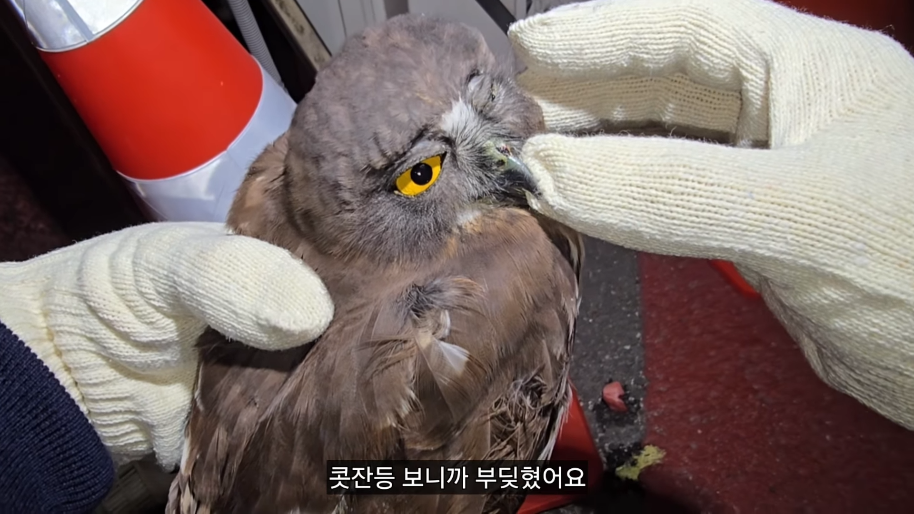
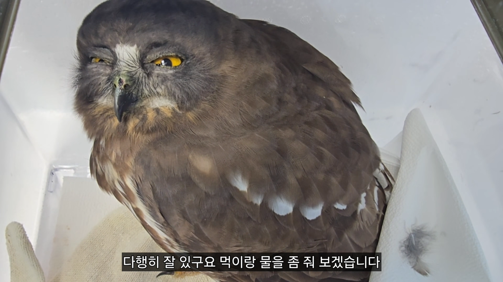
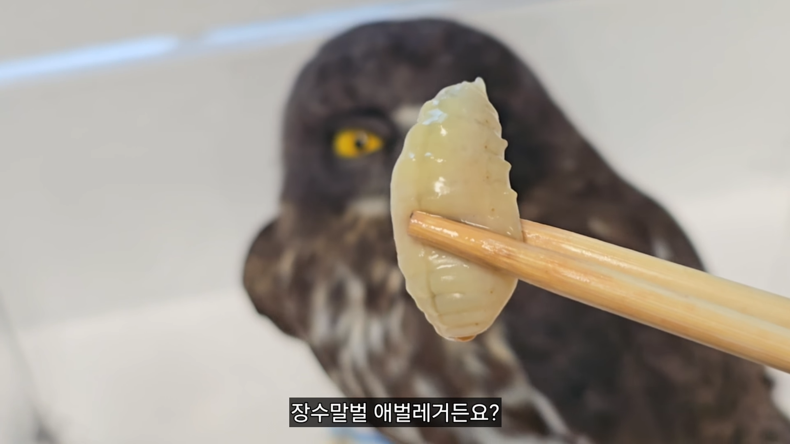
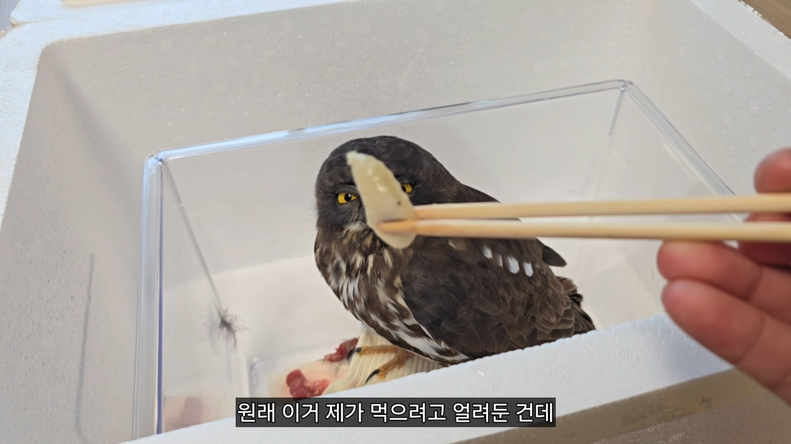

???




???
??? : 왐마 씨부엉 내 솔부엉이 생활 3년차인데 고기도 아니고 장수말벌 애벌레 주는 인간은 처음부엉
부엉
너 눈을 왜 그렇게 떠??
눈이 부엉
그걸 왜먹어요
이 사람 우마랑 친구임? 저걸 왜?
…예?

쓰다듬는건 허용해주네 ㅋㅋㅋㅋ
얘 진짜무슨 드루이드수준으로 동물잘다루더라.
손에 견과류 놓고있으니까 다람지가 거부감없이다가느오는거보고 버근가?싶었음.
사람먹는걸 주면 우째
이 사람 ㄹㅇ 드루이드임 ㅋㅋㅋㅋ
탕수육 소스 부을까?
부엉
장수말벌 애벌레 볶으면 맛있긴함
말벌집이랑 벌은 노봉방주 만들고 애벌레는 볶아먹움
왜케 빙구같냐ㅋㅋㅋ
??? 그걸 왜먹어요???
기엽다
특식이라니깐 눈커졌네
말벌성체랑 말벌집으로 노봉방주 만들고 남은 말벌집에 있는 애벌레들은 후라이팬에 구워먹으면 그렇게 맛있다던데
봉아 원래 먹긴 한다고 들었음
그걸 왜먹나싶어서 누군지봤는데 납득가네
??
김풍인줄..
일하다가 뵙는데 저말투안쓰더라ㅋㅋ
으하하핰
모기,장구버레 잡으면서 하학 하던 그아저씨 맞나?ㅋㅋ
죽을뻔한 부엉이 살려낸 거 진짜 대단함. 부엉이가 은혜 갚으러 올 듯
하...장수말벌은 진짜 개빡세서 못구했고요.. 평범하게 고양이 몇 마리 잡아왔습니다..
?